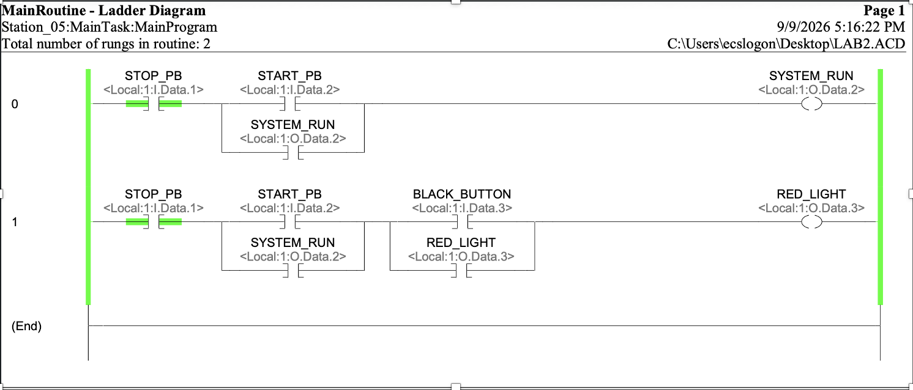
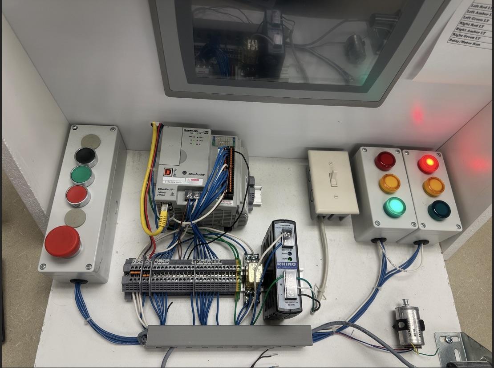

← All projects
CompactLogix 3-Wire Start/Stop
A tag-based ladder logic program written in Studio 5000 and downloaded to a physical lab station with push buttons and pilot lights, connected over EtherNet/IP through RSLinx.
How it works
- Rung 0: A classic 3-wire start/stop circuit with a seal-in branch drives the System Run output (green light).
- Rung 1: An interlocked red light. The black push button can only latch it while System Run is active, and Stop de-energizes both outputs.
I/O map
| Device | Address |
|---|---|
| Stop PB | Local:1:I.Data.1 |
| Start PB | Local:1:I.Data.2 |
| Black PB | Local:1:I.Data.3 |
| System Run | Local:1:O.Data.2 |
| Red Light | Local:1:O.Data.3 |
Fail-safe note
This station's Stop button is wired normally open, so it is examined with XIO. In industrial practice Stop is wired normally closed and examined with XIC, so a broken wire reads as Stop pressed instead of silently disabling the stop function.
Testing & bring-up
On hardware: the seal-in held after releasing Start, the red light only latched once System Run was active, and Stop cleared both outputs. Bring-up troubleshooting covered the PLC being left in Program mode and a missing Ethernet link that blocked going online.
Screenshots



